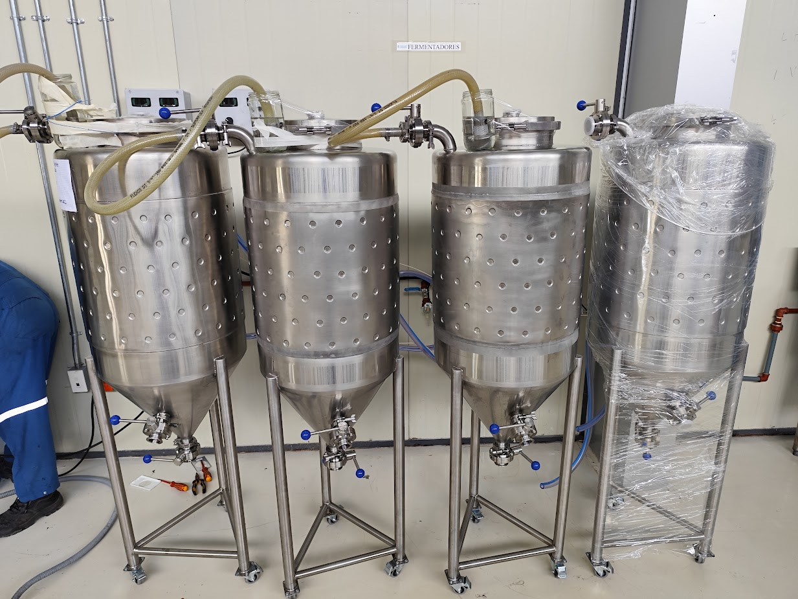

Fermentadores Cerveceros
Control térmico preciso para cervezas artesanales de calidad
Fermentación Controlada
Nuestros fermentadores cónicos están diseñados bajo estrictas normas sanitarias para garantizar la pureza de su cerveza. Fabricados íntegramente en acero inoxidable AISI 304 con acabados sanitarios.
Incluyen camisas de refrigeración (chaquetas tipo dimple) que aseguran una transferencia térmica eficiente y un control exacto de la temperatura de fermentación.
Ficha Técnica
- Material: Acero Inoxidable AISI 304 Grado Alimenticio
- Diseño: Cónico 60° para purga de levadura
- Refrigeración: Chaquetas Dimple Jacket en cilindro y cono
- Accesorios: Brazo CIP, Válvula de seguridad, Manhole
- Acabado: Pulido sanitario espejo interior
Galería del Producto

Unidad Completa